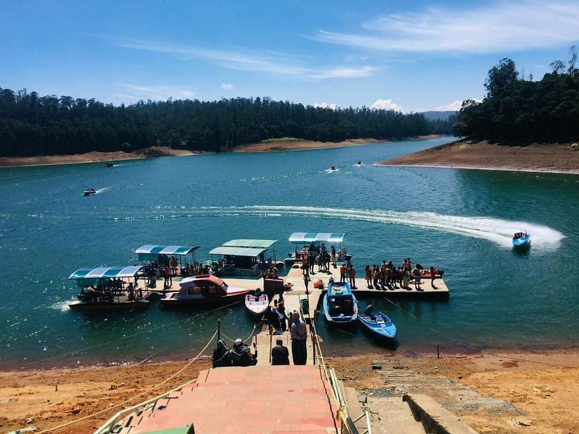

Ooty's attractions like the Pykara Lake and Falls, Nilgiri Mountain Railway, Botanical Gardens, and Ooty Lake collectively offer a blend of natural beauty, historical significance, and recreational activities. Each site showcases unique aspects of Ooty's charm, making it a favored destination for tourists seeking a peaceful retreat amidst picturesque hills and rich flora.